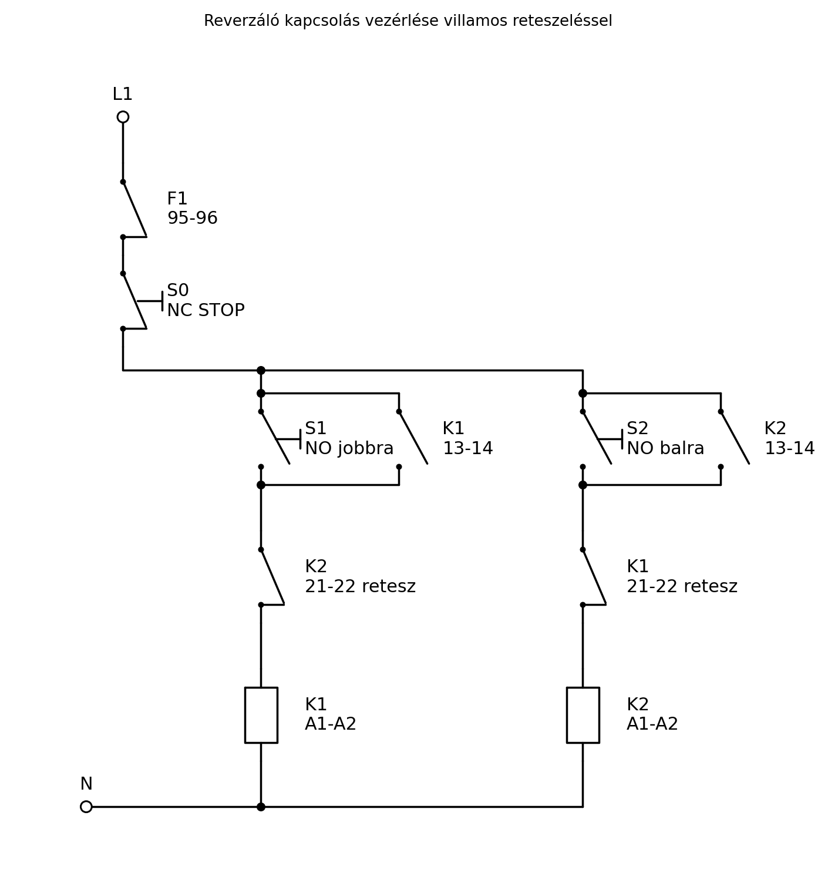

![Reverzáló kapcsolás főáramköre: K2 az L1 és L3 fázist cseréli - Q1 háromsarkú zárlatvédelem után az L1, L2, L3 a K1 (jobbra/előre) és a K2 (balra/hátra) mágneskapcsoló főérintkezőire ágazik. K1 kimenete egyenesen megy: L1→U1, L2→V1, L3→W1; K2 kimenetén az első és a harmadik fázis keresztezve jut tovább: L1→W1, L2→V1, L3→U1 (a kapocstáblázat szerint). A közös F1 hőkioldó a motor előtt van, a motor névleges áramára állítva; a motortest a PE-re csatlakozik. K1 és K2 egyidejű behúzása fázis–fázis zárlat, ezért villamos (21-22) és mechanikus retesz is kell (a K1–K2 közötti szaggatott vonal). A vezeték-keresztezések pont nélkül nem csatlakoznak. A K1 és a K2 közötti, háromszöggel jelölt szaggatott vonal a mechanikus reteszelés (IEC 60617): a két mágneskapcsoló nem húzhat be egyszerre; a pólusaikat összekötő szaggatott vonal pedig az együtt mozgó főérintkezőket jelöli.](assets/ve114-diagram-2.png)
Egy szállítószalag rossz irányba indulva az árut a gépbe löki, egy daru emelőmotorja lefelé enged, amikor felfelé kellene mennie, egy tolókapu csukódás helyett nyitna. Ezekben az esetekben a motor forgásirányváltására van szükség. Háromfázisú aszinkronmotornál a forgásirányt a fázissorrend határozza meg, ezért a cserét legegyszerűbben két mágneskapcsolóval valósíthatjuk meg: az egyik az egyik, a másik a másik forgásirányt kapcsolja.
A fázissorrend felcseréléséhez elég két fázist megcserélni. A reverzáló kapcsolásnál tehát két mágneskapcsoló főérintkezőit úgy kötjük, hogy az egyiknél például L1→U1, L2→V1, L3→W1, a másiknál pedig L1→W1, L2→V1, L3→U1. Ekkor a második irányban az L1 és L3 sorrendje megfordul, és a motor forgó mágneses tere ellenkező irányba forog. A veszély abban rejlik, hogy ha a két mágneskapcsoló egyszerre kapna feszültséget, a hálózat két fázisát a két kapcsoló főérintkezőin keresztül közvetlenül összeköthetjük. Ez rövidzárlatot okoz: heves ív, készülék-tönkremenetel, tűz és súlyos baleset veszélye. A reverzáló kapcsolás ezért soha nem hagyhatja ki a reteszelést.
A következő kapcsolási rajz a vezérlési áramkört mutatja. A főáramkörben két mágneskapcsoló főérintkezői dolgoznak, a vezérlésben pedig a tekercseik, az önfenntartó segédérintkezőik, a reteszelő érintkezőik és a nyomógombok.

A diagram olvasása. A vezérlési áramkör az L1 fázisból indul, és először a hőkioldó F1 95–96 bontóérintkezőjén halad át (túlterheléskor mindkét irányt leállítja). Az S0 STOP nyomógomb alaphelyzetben zárt (NC), ezért a feszültség eljut a két irányág közös pontjára. A „jobbra” gomb (S1) megnyomásakor a K1 tekercs áramot kap, mert a K2 reteszelő érintkezője (21–22) zárt. Amikor K1 behúz, a saját önfenntartó érintkezője (13–14) párhuzamosan zárja az S1 nyomógombot, így a gomb elengedése után is maradhat a behúzott állapot. A „balra” ágban ugyanez történik a K2 tekercsével és az S2 nyomógombbal. A kétágú reteszelés lényege: K1 reteszelő érintkezője sorba van kötve a K2 tekercsével, és K2 reteszelő érintkezője sorba van kötve a K1 tekercsével. Így ha K1 behúz, a K2 felé menő reteszelő érintkező bont, és K2 nem tud behúzni. Ha pedig K2 húz be, a K1 felé menő reteszelő érintkező bont.
A főáramkör kapcsolási rajza:
A rajzon két mágneskapcsoló főérintkezői párhuzamosan táplálják a motort: a K1 kimenete egyenesen megy az U1, V1, W1 kapcsokra, a K2 kimenetén viszont az első és a harmadik fázis keresztezve jut tovább (L1→W1, L3→U1), a középső (L2→V1) változatlan. A közös F1 hőkioldó mindkét forgásirányban védi a motort; a K1 és K2 közötti szaggatott vonal a mechanikus reteszt jelöli. Ha a két mágneskapcsoló egyszerre zárna, az L1 és az L3 fázis a két kontaktor főérintkezőin át közvetlenül összekapcsolódna.
A fázisfelcserélést a következő kapocstáblázat foglalja össze:
| Mágneskapcsoló | L1 | L2 | L3 |
|---|---|---|---|
| K1 (előre) | U1 | V1 | W1 |
| K2 (hátra) | W1 | V1 | U1 |
A K2-nél az L1 és az L3 fázist cseréljük fel, így a motor forgó mágneses tere az ellenkező irányba forog. A V1 ugyanaz marad, mert elegendő két fázist megcserélni.
Definíció. Reverzáló kapcsolás. Olyan motorvezérlés, amely lehetővé teszi a háromfázisú aszinkronmotor forgásirányváltását két mágneskapcsolóval, a fázissorrend felcserélésével.
Definíció. Reteszelés (interlocking). Olyan villamos, mechanikus vagy logikai megoldás, amely megakadályozza, hogy két, egymást kizáró mágneskapcsoló (vagy funkció) egyidejűleg behúzott állapotba kerüljön. A reteszelés a biztonságos reverzáló kapcsolás elengedhetetlen eleme.
Szabály. Villamos reteszelés. Mindkét mágneskapcsolóról egy-egy bontó (NC) segédérintkezőt kell a másik irány tekercsének áramkörébe sorba kötni. A K1 bontó érintkezője a K2 tekercs elé, a K2 bontó érintkezője a K1 tekercs elé kerül. Ezt a két érintkezőt reteszelő segédérintkezőnek nevezzük.
Definíció. Mechanikus retesz. A két mágneskapcsoló közé szerelt mechanikus kiegészítő, amely fizikailag megakadályozza, hogy mindkettő behúzott állapotban maradjon. Ha az egyik behúz, a másik főérintkezőit mechanikus ütköző tartja nyitva. A mechanikus retesz a villamos reteszeléssel együtt alkalmazva ad teljes védelmet, mert egy segédérintkező meghibásodása vagy a tekercs ragadása esetén is véd.
A gyakorlatban a reverzáló pár két egymás mellé szerelt mágneskapcsolóból, a közéjük (vagy az előlapjukra) épített mechanikus reteszből és a gyártó által adott összekötőkből áll. Az alábbi ábrán felül a betáp mindkét kontaktorra párhuzamosan jut, alul a K2 kimenetén az L1 és az L3 helyet cserél (K1: U1–V1–W1, K2: W1–V1–U1, a fenti táblázat szerint); a K1 és a K2 előlapján jelölt NC segédérintkezők adják a villamos reteszelést. A jobb oldali kis képek a mechanikus retesz billenőkarját mutatják: ha a K1 behúzott, a kar a K2 mozgó részét mechanikusan kitámasztja.
Figyeld meg, hogy a két kontaktor kimenete közvetlenül össze van kötve: ezért kell a kettős (villamos és mechanikus) reteszelés – egyidejű behúzásnál az L1 és az L3 a két készüléken át zárlatba kerülne. A HTML-kiadásban az összekötők, a mechanikus és a villamos retesz rétegenként ki-be kapcsolható.
Definíció. Nyomógomb-reteszelés. A vezérlésben az irányváltó nyomógombokat úgy is megszakíthatjuk, hogy az egyik irány nyomógombja az ellenkező irány áramkörében egy NC érintkezőt bontson. Ez a nyomógombban kialakított kettős érintkezővel valósítható meg. A villamos reteszelés kötelező; a mechanikus retesz a segédérintkező-hiba és a hegedés elleni független tartalék, reverzáló mágneskapcsoló-kombinációknál a gyártók rendszerint előírják (ellenőrizendő: gyártói adatlap, MSZ EN 60204-1). A nyomógomb-reteszelés további, kiegészítő védelem.
Szabály. Késleltetés irányváltásnál. Ha a reverzálás automatikus üzemben történik, a két irány közé időbeli késleltetést kell iktatni, hogy a kikapcsolt mágneskapcsoló íve biztosan kialudjon. Kézi nyomógombos működtetésnél az emberi reakcióidő és a mechanikus átállás általában elegendő, automatikus vezérlésnél azonban időrelét kell beépíteni. A szükséges késleltetést a gyártói adatlap és a mágneskapcsoló ívoltási tulajdonságai alapján kell megválasztani; tipikus érték néhány tizedmásodperc (ellenőrizendő: gyártói adatlap).
1. példa. Egy 5,5 kW-os, 400 V-os, 1400 1/min-es aszinkronmotort kell reverzáló kapcsolásban üzemeltetni. A motor adattábláján a névleges áram 11 A. Válasszunk mágneskapcsolót, és ellenőrizzük a bekötést.
Számítás. A motor névleges feszültsége , névleges árama . Mágneskapcsolót AC-3 terhelésre választunk. A kapcsolónak nagyobbnak kell lennie a motor névleges áramánál, tipikusan . Ha a gyártó kínálatában van 12 A-es AC-3 készülék, ez megfelelő. A beállított motorvédő kapcsoló vagy hőkioldó névleges áramát köré állítjuk.
A K1 főáramköri bekötése: L1→U1, L2→V1, L3→W1. A K2 bekötése: L1→W1, L2→V1, L3→U1. A tekercsek 230 V-os vezérlésűek, így a vezérlés L1 és N között működik. A reteszeléshez mindkét mágneskapcsolóra szükség van egy-egy bontó segédérintkezőre, például 21–22 jelölésűre.
2. példa: mi történik reteszelés nélkül? (Ha az irányváltás forgás közben történik, ellenáramú fékezéssel, AC-4 szerinti, rendszerint nagyobb kontaktor szükséges, lásd a Kapcsolókészülékek működése, ívoltás és használati kategóriák alfejezetet.) Tegyük fel, hogy a villamos reteszelést és a mechanikus reteszt is elhagyják, és a K1 és K2 tekercs egyszerre kap feszültséget. Az L1 és L3 fázis a két mágneskapcsoló főérintkezőjén át rövidre zár.
Legyen egy fázisvezető impedanciája a zárlat helyéig ; a fázis–fázis hurokban két ilyen van sorban (tanulási példa; valós hálózatnál méréssel kell meghatározni). A várható zárlati áram:
Ez az áram bőven meghaladja a mágneskapcsoló kikapcsolási képességét. A motorvédő kapcsoló (vagy D16 kismegszakító) mágneses kioldója leold, de a mágneskapcsoló főérintkezője közben összehegedhet, és a zárlat ívkárosodást okoz. Tilos ezért a reteszelés elhagyása.
Szabvány. A kisfeszültségű kapcsoló- és vezérlőkészülékekre vonatkozó MSZ EN 60947 sorozat, azon belül a mágneskapcsolókra vonatkozó részek határozzák meg a kapcsolókészülékek használati kategóriáit, érintkezőjelöléseit és a koordinációra vonatkozó követelményeket (ellenőrizendő: aktuális kiadás és pontos előírások). A gépek villamos berendezéseire az MSZ EN 60204-1 vonatkozik. E szabványok szerint a reverzáló kapcsolást úgy kell kialakítani, hogy a két irány egyidejű bekapcsolása lehetetlen legyen. A gyakorlatban ez villamos reteszeléssel és – ahol a kockázat indokolja – mechanikus retesszel együtt valósul meg.
Továbbvitt eredmény. A reteszelés elvét – bontó segédérintkezővel sorba kötött ellenirányú tekercs – a(z) Csillag–delta indítás vezérlése alfejezetben is használjuk, mert ott a csillag- és a delta-mágneskapcsoló szintén kizárja egymást.
Egy műhelyben portáldaru emelőmotorját reverzáló kapcsolással vezérelték. A villamos reteszelést beépítették, de a mechanikus reteszt spórolásból elhagyták. Egy hideg reggelen a K1 segédérintkezője a rázkódástól megszorult, így a K1 tekercs feszültsége mellett a K2 tekercs is feszültséget kapott. A villamos reteszelés meghibásodott, és mindkét mágneskapcsoló behúzott. A hálózat két fázisát összekötő áram rövidzárlatot okozott: a szekrényben megolvadt a vezeték szigetelése, a kapcsoló érintkezői hegesedtek, és a karbantartónak több napig tartott a javítás. A mechanikus retesz ezt megakadályozta volna. A tanulság: reverzáló kapcsolásnál a villamos retesz önmagában nem elegendő biztosíték, a mechanikus retesz fontos kiegészítő védelem.
Cél. A tanuló építse meg a reverzáló kapcsolást törpefeszültségű vezérléssel, és ellenőrizze a reteszelés működését.
Eszközök és anyagok. Két mágneskapcsoló (pl. 24 V DC vagy 24 V AC tekercs), motor vagy jelzőlámpa a főáramkör szimulálására, vezérlőfeszültség forrása, nyomógombok (S0 NC, S1 NO, S2 NO), vezetékek, szerelőszerszámok, multiméter.
Biztonsági korlát. A feladat tanműhelyi (törpefeszültségű) környezetre vagy jogosult oktató felügyeletére vonatkozik; hálózati feszültségen önállóan ne végezd. Hálózati feszültségű (230/400 V) munkát csak jogosult, arra képesített személy végezhet, a hatályos előírások szerint.
Dokumentálás. Jegyezd fel a bekötési rajzot, a felhasznált készülékek típusát és a próbák eredményét. Hibás működés esetén a mérési eredményeket rögzítsd.
Hiba 1: a reteszelés hiánya. A két mágneskapcsoló egyszerre behúz, és a hálózat két fázisát rövidre zárja. Ez a legsúlyosabb szerelési hiba. Helyes gyakorlat: a villamos reteszelést mindig bekötni, és a mechanikus reteszt is felszerelni.
Hiba 2: rossz fázisfelcserélés. A szerelő a három fázist ciklikusan tolja el (L1→V1, L2→W1, L3→U1). A fázissorrend ekkor nem változik, a forgómező nem fordul meg. Helyes gyakorlat: pontosan két fázist cserélni, például az L1 és L3 fázist.
Hiba 3: a reteszelő érintkezőket rosszul kötik be. A reteszelő érintkezőket az ellenkező irány tekercséhez kell sorba kötni, nem a saját tekercshez. Ha a K1 bontó érintkezőjét a saját tekercséhez köti, a reteszelés nem jön létre, és a két irány egyszerre behúzhat.
Hiba 4: a mechanikus retesz nincs beszerelve vagy rosszul van rögzítve. A mechanikus retesz elhagyása vagy laza rögzítése esetén a villamos reteszelés meghibásodása esetén nincs tartalék védelem. Helyes gyakorlat: a gyártói előírás szerint felszerelni, és működését próbával ellenőrizni.
1. feladat (A). Mutasd be a reverzáló kapcsolás főáramköri bekötését: mit kell a K2 mágneskapcsolónál tenni ahhoz, hogy a forgásirány megforduljon?
2. feladat (A). Sorold fel a reteszelés három fajtáját, és röviden jellemezd mindegyiket.
3. feladat (B). Rajzold le szövegesen vagy kapcsolási rajzban a vezérlési áramkört: S0 NC STOP, S1 NO jobbra, S2 NO balra, K1 és K2 tekercs, K1 és K2 önfenntartó NO érintkezők, K1 és K2 reteszelő NC érintkezők. Jelöld a kapcsokat.
4. feladat (B). Egy 7,5 kW-os, 400 V-os motor névleges árama 14 A. Add meg, milyen AC-3 mágneskapcsolót választanál, és írd le a villamos reteszelés bekötését.
5. feladat (C). Tegyük fel, hogy egy reverzáló kapcsolásban a reteszelés meghibásodik, és a K1 és K2 egyszerre behúz. Egy fázisvezető impedanciája a zárlat helyéig (a hurokban két ilyen van sorban). Számítsd ki a várható zárlati áramot. A kört védő motorvédő kapcsoló (vagy D16 kismegszakító) mágneses kioldója leold-e? Milyen káros következményekkel járhat a zárlat?
6. feladat (D). Egy reverzáló kapcsolásban a motor a „jobbra” irányban működik, a „balra” irányban azonban nem indul. A K2 mágneskapcsoló tekercse a gomb megnyomásakor feszültséget kap, de a főérintkezői nem húznak be. Milyen méréssel különítenéd el, hogy a tekercs szakadt, a segédérintkező hibás, vagy a mechanikus retesz akadályozza a behúzást? Írd le a mérési sorrendet és a várható értékeket.
1. feladat (A)
A K2 mágneskapcsolónál az L1 és L3 fázist fel kell cserélni a motor
kapcsaihoz képest. Ha K1-nél L1→U1, L2→V1, L3→W1, akkor K2-nél L1→W1,
L2→V1, L3→U1. Ez a két fázis sorrendjét felcseréli, és a forgó mező
megfordul.
2. feladat (A)
A reteszelés fajtái: - Villamos reteszelés: a
mágneskapcsolók bontó segédérintkezőivel. - Mechanikus
retesz: a kapcsolók közé szerelt fizikai ütköző. -
Nyomógomb-reteszelés: a nyomógombok kettős érintkezői,
amelyek az ellenkező irány áramkörét bontják.
3. feladat (B)
A vezérlési rajz megegyezik a szövegben bemutatott diagrammal. A
kapocsjelölések: K1 önfenntartó NO 13–14, K2 önfenntartó NO 13–14, K1
reteszelő NC 21–22 a K2 tekercs elé, K2 reteszelő NC 21–22 a K1 tekercs
elé, A1–A2 a tekercs, S0 NC STOP az elején.
4. feladat (B)
AC-3 mágneskapcsolót a motor névleges áramánál nagyobbra kell
választani, például 16 A-es típust. A villamos reteszelés bekötése: a K1
21–22 bontó segédérintkezőt a K2 tekercs A1 kapcsa elé, a K2 21–22 bontó
segédérintkezőt a K1 tekercs A1 kapcsa elé kell kötni; a tekercsek A2
kapcsa közvetlenül az N vezetőre csatlakozik (az MSZ EN 60204-1 szerinti
elv: a kapcsolóelemek a tekercs fázisoldalán vannak; ellenőrizendő).
5. feladat (C)
A várható zárlati áram:
A motorvédő kapcsoló (vagy D16 kismegszakító, mágneses kioldás 10–20· = 160–320 A) kiold, mert a zárlati áram jóval nagyobb ennél. B jellegű kismegszakító motorkörben nem alkalmas, mert az indítási áramlöket miatt leoldhat. A zárlat során a mágneskapcsoló főérintkezői összehegedhetnek, a vezetékek szigetelése megsérülhet, és tűz keletkezhet.
6. feladat (D)
A tünet: a K2 tekercse feszültséget kap, de a főérintkezők nem húznak be
(a K1 nincs behúzva). Mérési sorrend: 1. Feszültségmérés a K2
tekercsén (A1–A2), a gomb megnyomásakor. Ha a kapocsfeszültség
névleges, a vezérlőkör rendben van, a hiba a K2 tekercsében vagy
mechanikájában keresendő; ha jóval kisebb, a hiba a tekercs előtti
körben van (reteszelő érintkező, kötés). 2. Feszültségmentesítés
(öt szabály), majd ellenállásmérés a K2 tekercsen (A1–A2).
Néhány száz
– néhány
az elvárt érték (típusfüggő, ellenőrizendő: gyártói
adatlap); végtelen érték szakadt tekercset jelent. 3.
Kézi behúzáspróba feszültségmentesen. Próbáld kézzel
behúzni a K2 hídját: ha mechanikusan akad, a mechanikus retesz (vagy
beragadt K1 híd) gátolja a behúzást; ha könnyen mozog, de feszültség
alatt nem húz be, a mágnes vagy a tekercs hibás. 4.
Segédérintkező ellenőrzése. Feszültségmentesen,
folytonosságméréssel nézd meg a K1 bontó segédérintkezőjét (21–22): zárt
állapotban 0
körüli értéket kell mutatnia; szakadás esetén a reteszelő érintkező
gátolja a K2 tekercsének táplálását.
A reverzáló kapcsolás háromfázisú aszinkronmotor forgásirányváltását valósítja meg két mágneskapcsolóval. A forgásirány megfordításához a K2 mágneskapcsolónál két fázist, például L1-et és L3-at fel kell cserélni: L1→W1, L2→V1, L3→U1. A legnagyobb veszély a két mágneskapcsoló egyidejű behúzása, ami fázis–fázis zárlatot okoz. Ezt reteszeléssel kell megakadályozni. A villamos reteszelés lényege, hogy a K1 bontó segédérintkezője sorba van kötve a K2 tekercsével, és a K2 bontó segédérintkezője sorba a K1 tekercsével. A mechanikus retesz fizikai ütközővel zárja ki az egyidejű behúzást, a nyomógomb-reteszelés pedig az ellenirányú nyomógombokkal ad további védelmet. Automatikus reverzálásnál időbeli késleltetést kell beépíteni az ív kialvása érdekében. A reteszelés elvét a csillag–delta indítás vezérlésénél is alkalmazzuk, ahol a csillag- és delta-mágneskapcsoló szintén egymást kizáró kapcsoló. Az áramkör szerelése és ellenőrzése során mindig tartsuk be a feszültségmentesítés öt biztonsági szabályát, és hálózati feszültségű munkát csak jogosult személy végezhet.